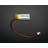
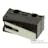
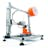

Things used in this project
Hardware components |
|

|
Blues Notecard (Cellular) |

|
Blues Notecarrier A |

|
Seeed Studio XIAO ESP32S3 Sense |
|  | Li-Ion Battery 100mAh |
|  | Microswitch, Ultra Subminiature |

|
DFRobot UNIHIKER - IoT Python Programming Single Board Computer with Touchscreen |
Software apps and online services |
|

|
Arduino IDE |

|
Blues Notehub.io |
Hand tools and fabrication machines |
|

|
Soldering iron (generic) |
|  | 3D Printer (generic) |
Story
There are many outdoor activities most people can do, however it is not considered safe for someone with mobility issues to do on their own, despite them being perfectly capable of doing the activity. This includes activities from exploring the countryside to kayaking. This project addresses that issue by creating a GPS enabled alarm system that can be used to call for help.
Project Breakdown
The solution is formed of three parts. The companion device, the server, and the alerting device.
The companion device travels with the person doing the activity. It is activated by pulling a key ring like item (that is also a whistle) away from the main unit. This unit can be mounted on baggage, clothing, or anything else that will travel with the user. Most users will probably want to have a cord between the keyring and their clothing to allow them to activate it by pulling the string. Replacing the keyring turns everything off again.
The alerting device lives with the person who needs to be alerted if the companion device's alarm is activated. If the alarm is activated a warning sound is triggered and the GPS coordinates of the activated companion device are displayed on the screen.
The server setup is required to link everything together and can be run on basic shared hosting.
Below are the instructions to guide you through re-creating the project...
Server Setup
The server setup consists of two parts. One is the Blues hosted notehub, and the second is a basic web server that can run PHP scripts. We will set the servers up first as we need one of the values from the notehub to programme our companion device.
There are two PHP scripts that will run on most basic/shared web housing setups, or even a Raspberry Pi if you prefer. One of the scripts (callback.php) is called by the companion device (via the notehub) and it stores the location sent to it in a cache file (called location.txt). The other script (check.php) is called by the alerting device to check if that location has been stored in the cache file recently. You should be able to simply copy these two files onto your web server and they will work without any alteration.
To configure the notehub for this project you will need to create an account at https://notehub.io/sign-up and click the “+ Create Project” button in the top right on the screen. You will need to give the project a name (Freedom Help Call is good but it can be anything) and the product UID will be prepopulated with a suggested value. Click the "Create Project" button and then make a note of the UID (including both parts on the screen) that you can copy from the confirmation screen.
We now need to create a route. There are a lot of actions to do, but individually they are not hard. First click “Routes” on the left hand side of the screen, and then click the “+ Create Route” button on the top right of the screen. As we are using our own server click the “Select” button next to “General HTTP/HTTPS Request/Response”. Give the route a name. I have used “HempCallback” but it can be anything. In the URL field put the callback URL for the PHP script on your server. It will be something like https://myserver.example.com/callback.php . Now under “Filters” look for the “Notefiles” option and select “Selected Notefiles”. Then add “_track.qo” to the “Include Other Notefiles:” list. Finally save this with the top right “Save Route” button as all the other default values will be good.
The server setup should now be up and running.
Companion Device
This is the part of the solution that will be carried by the person who may need to call for help. It is based around a Blues Notecard Cellular NBGL mounted for communication, and an XIAO-ESP32S3 (Sense) for controlling the device. All this is housed in a custom 3D printed case.
The design is kept simple and is normally powered down so the battery will only need replacing every few years. The alarm is triggered by pulling a keyring away from the unit. This action releases a microswitch that supplies power to the device. Replacing the keyring turns everything off again.
First we can programme the main Arduino firmware onto the XIAO-ESP32S3. This can be done using the instruction on the Seeedstudio wiki and the firmware that is attached to this listing. You will need to use the product UID you noted down from the notehub setup earlier and add that to lines 11 and 33.
The firmware simply sends instructions to the Blues Notecard to intermittently turn on the GPS, to intermittently connect to the mobile network, and to frequently send the location when it is connected.
After a period of time another set of instructions are sent to reduce the frequency of the updates to conserve the battery. The settings we initially sent to the Notecard are perpetual so we could omit the microcontroller from the design if we were wanting to reduce the component count, but by keeping it we can extend the battery life by reducing the update frequency.
Next we can assemble the electronics. A [hopefully] simple and accessible wiring diagram is attached to this listing to help with this. I have used some header pins (in the photographs) to allow easy disassembly for testing, but the wires can be directly connected to the note carrier if them falling out a problem. I strongly recommend not connecting the battery until everything else is connected as accidentally shorting the battery can be very dangerous.
When this has all been done the unit should be functional and can be assembled into the enclosure. The STL files for this design are attached to this listing.
You can test the device at this stage by powering it up and looking for updates on the Notehub.
Note that I had a Notecarrier AA (photographed) with a battery pack, and that pack was removed for size reasons. This will not be necessary with a Notecarrier AL. Also note that one of the wires is not required, but I am suggesting that is it included as it allows more advanced firmware to be produced in the future.
Alerting device
This is the device that will sound a warning and show the companion device location when it is activated. The device is based around a DFRobot UNIHIKER and could be mounted in a relative’s home or place of work.
After setting up the UNIHIKER using the instructions at https://www.unihiker.com/wiki/get-started we can copy the file freedomhc.py (attached to this listing) to the root home directory (“/root” and not "/") of the UNIHIKER. The URL of where the check.php script (that was installed earlier) needs adding to line 11 of this file.
To run this software press the HOME button, select “2-Run Programs”, select “root/”, and select “freedomhc.py”. You should now see the word “Clear” displayed to signify the alarm has not been triggered.
When the keyring is removed from the companion device the alerting device will start sounding and showing its location within a couple of minutes.
Conclusion
All things considered I am quite happy to have this working. There are many refinements and improvements I would like to do, but for a minimum viable product I am happy with the outcome. Hopefully this will act as a base for future developments and projects.
One word of warning is that I consider this to be a proof of concept prototype. It is fully functional, but as a safety device I would hesitate to rely on it without further testing first.
Please feel free to use parts of this in your project, and do feed back what you manage.